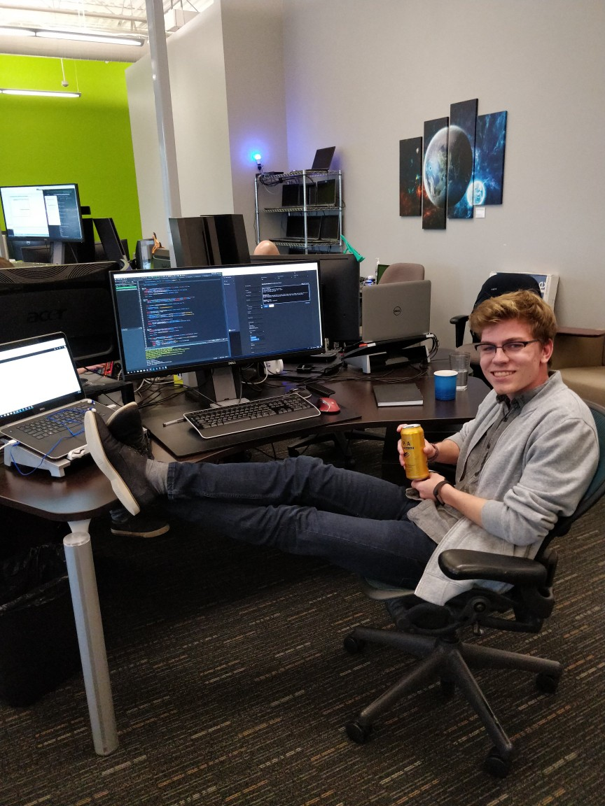

Introduction
This is the post explaining my first/second work term at Client Outlook Inc. in Waterloo. This was my first ever co-op, and this job helped me gain a greater understanding of the software industry and expanded my knowledge of developmet practices. This post should help you see what I learned and how I grew as a developer over the 8 months I was there.
Employer Info
Client Outlook Inc. is a medical imaging software company that created eUnity, a medical workstation in a browser. The software allows radiologists to view images and make diagnoses anywhere, from the office, to your home to your phone while on a golf course. The company is around 10 years old and is really starting to grow, aquiring more and more clients constantly. eUnity was recently partnered with Google as the viewer for their new Healthcare API.
Job Description
I was hired as a software tester for my co-op position. I began with manual testing of the product, going through the regression plan to learn it and verify core funtionality and UI behaviour. After I had done this for a while I was placed into a more development oriented project, writing automation tests.
Right when I was hired, I was placed into a basic QA role, running through the regression plan, aiding the QA team in getting the new version of eUnity shipped. They were right at the end of a release cycle as I was hired so this was a perfect opportunity for me to learn the product and the core responsibilities of a tester. Although manual testing is not what I wanted to do, I was very thankful for it as I learned the key things you should make sure you account for as a developer. Manual testing of the product and general training took about a month of my co-op, and as much as I am glad it was only a month, I am very thankful for the experience it gave me and the knowledge I now possess.
When the new release went out the door, the team got me introduced to the automation that was already in place and began giving me a few little test cases to automate. This is when I started to feel more useful and engaged in my work. I still had some manual testing to do here and there but my main focus was automation. I kept adding test cases here and there when needed, checking tests off of the regression plan that were now automated and run every night, making everyone's lives easier. I continued to learn about the product and about industry level programming, and after a while got to start writing my own framework for other people to use in their tests. This is when I felt the best about my job and felt the most engaged.
As my skills continued to develop and show themselves to the developers at the company, they began giving me more and more difficult tasks. The last month and a bit I got my final project - creating an API for testing purposes, giving the developers and testers access to much more useful functionality and information for their tests. I also got to fix a bug here and there which I really enjoyed. The API took me about a month to get off the ground and get a good start on, providing the testing team functionality that they have been wanting for around a year. Finally, before I left, I got to create a very valuable test: an image comparison test that runs every night to ensure that nothing breaks during the development of new features.
 Our amazing workspace.Goals
My main goals for the co-op work term were to learn more of the technologies used throughout the industry, to expand on my written communication skills, and to become more comfortable in myself in terms of programming. All of these goals were tailored towards the co-op position I had, but were also useful in more long term areas of my life. I tried to make these goals not only pertain to my position, but also things that were just useful skills for the future.
I wanted to learn new programming languages, and also wanted to learn what technologies were used throughout the high-tech industry. Learning some JavaScript will definitely aid me in future co-op positions, as it is the standard language used in web development. I also learned Dart, which is the language that Google uses for their sites, so this will definitely be useful to know.
I wanted to work with both technologies I already knew, and any new industry standard technologies that I could. I am passionate about learning and always love learning new things, especially if those things will help me in my future career. I also find new computing technologies fascinating. I also wanted to see any technology I already knew in the field, to see how the way I have been using it compares to how it is used in the industry.
In reflecting on my goals, I believe that I have completed all the of goals I set out for myself. Over the course of the 8 months, I became more and more confident in my programming ability, as I went from creating simple automation tests to developing APIs for other testers/developers to use when writing tests, along with fixing a few of the bugs I found. Along with my confidence in my ability to develop software, my ability to communicate also improved, as I hardly needed to clarify any documentation I created as the term neared an end. I also completed my goal of learning about industry technologies. I used Jenkins, JUnit, Maven, Fogbugz, Mercurial and Kiln, which are all common in the industry. I am proud of how much I learned and developed over the 8 months I was at Client Outlook.
Conclusion
As this was my first co-op experience, my time at Client Outlook was a huge learning experience. I was hoping to get lots of new knowledge and experience out of this work term, and come out a stronger worker, programmer and person in general. My experience at this company was incredible, as I got everything I wanted out of it and more. I emerged from this position a stronger worker and developer, having made lots of friends along the way. This was a great place full of great people and I could not be happier with my experiences.
Acknowledgments
I'd like to use this section to thank some people that really helped me on my co-op journey at Client Outlook. First of all, I'd like to thank everyone I worked with for making my first co-op experience so amazing. I felt welcome and at home right from the start.
I'd like to thank Sergey, who put a word in for me at Client Outlook, providing me with the initial connection at this company. He was a great teacher and provided me with plenty of projects to help me learn. I'd also like to thank Dan, the VP of technology at Client Outlook, who hired me and gave me this amazing opportunity. He provided lots of insight into the industry and the technolgies used everywhere.
Finally, I'd like to give a huge thank you to the entire QA team, which I worked with every day. The helped me fit in and feel at home, and helped me so much throughout the term. I'd specifically like to thank Sitwat, who got me up to speed on automation and who helped me the most throughout the term. I learned a lot and am truly thankful for the opportunity to work along side her. Finally, I'd like to thank Clark, the QA team lead. He was an amazing team lead and mentor, who encouraged me constantly to keep pushing what I was capable of and giving me more and more challenging tasks throughout the term.